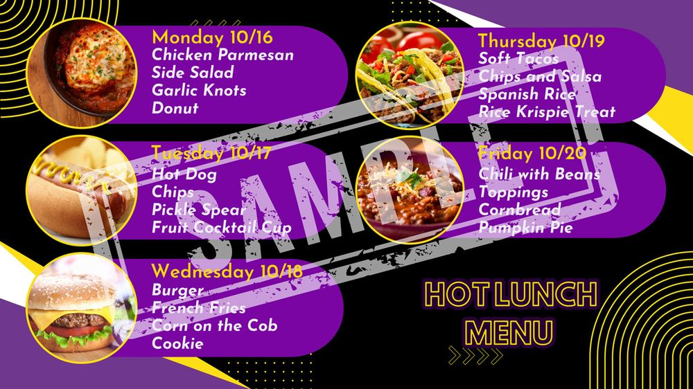

Parent Portal
Welcome to the Parent Portal!
This is your hub for staying up-to-date on your child’s school life. You can find information about school events and resources. We’re here to make it easier for you to be involved in your child’s education. Thank you for being part of our school community.
- Athletics
- Calendars
- Fine Arts
- Gradelink
- Handbooks
- Hot Lunch
- Intramurals
- Report Absence
- Spirit Days
- Supply Lists
- Town Halls
- Traffic Patterns
Gradelink
Gradelink makes it simple to maintain parent and school communication. The parent portal provides access to academic progress, making it easy to view class and assignment grades, due dates, upcoming homework, and more.
Parents and students can download file attachments posted by the teacher, including worksheets, permission slips, study guides, and the class syllabus.
Calendars
Our school calendar is designed to balance academic rigor with well-deserved breaks, providing students and educators with optimal learning opportunities.
Report Student Absence
Advanced notice of your student’s absence for appointments, family events, etc. will help teachers prepare and keep students on track.
Student Handbooks
Athletics
6th–12th graders who are participating in our sports program will find practice and game schedules for each season below:
Intramural Sports
Every year for the elementary grades we have intramural sports. They always enjoy getting to face off against their fellow classmates on the basketball court as well as on the soccer field. We create our own league within the school. All parents are welcome to come in and watch their student play just like any other sports game. This ensures that our elementary students benefit from playing sports without the added expense and time it takes to participate in a league.
Game schedules and team lists are sent home to families. Please contact the school office if you need a copy.
Hot Lunch
A lunch menu form is sent out via email/text one week in advance for students to select the days they would like to eat hot lunch.
If your student is enrolled and you are not receiving the lunch form, please contact the school office at (301) 856-1616 or iba@ibcministries.org.

Spirit Days
Throughout the year, we have Spirit Days when students and staff have the opportunity to show off their school spirit!
Supply Lists
Academy: For the IBA supplies, we now charge a $50 school supply fee which covers everything except a backpack, lunchbox, water bottle and King James Bible.
Fine Arts
Every year our students from fourth grade to twelfth grade participate in Fine Arts. We are part of an association of Christian schools. We compete against each other in Regional and State competitions. These are competitions our students look forward to participating in every year. Details for the event categories are below:
Parent Teacher Town Halls
We host these town hall meetings to maintain good communication and healthy interaction between parents and educators as we work together for our students.
Traffic Patterns
To optimize student pickup and dropoff times, we have instituted the following traffic patterns for the Preschool and Academy.
Explore the Possibilities at IBA!
Come see the campus, meet our teachers, and ask your questions.